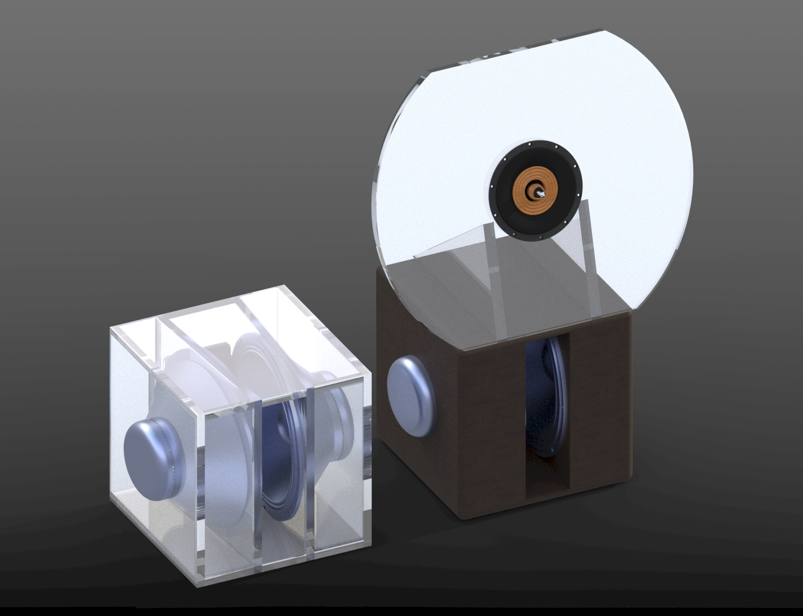

This is the final iteration of my first 3 way open baffle speaker design.
The tweeter is a 6ohm paper cone closed back driver harvested from an old pioneer speaker.
The mid range driver is a page industries 8ohm 8inch speaker driver harvested from ceiling world at my studio at nicleson file co, used for public address. Its high sensitivity and I had to use many resistors to get it around the same loudness as the other drivers.
The bottom drivers are 8ohm 15in drivers harvested from amps in the basement of the firehouse in worchester.
The cutoff at the high end is around 3k and the low end about 300hz
Changing the 8in 4ohm diver to a 15in 8ohm driver did wonders for the bass. Now that the bass is dipole its louder and more efficient.
Once I pair these with my 4ohm dual 15 peavy black widow ripole subwoofers i plan to design, I can get the bass fast and deep down to ideally 30hz.
